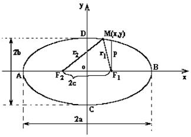
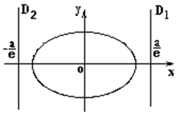

6.3.1. Эллипс
Эллипсом называется геометрическое место всех точек  , для которых сумма расстояний до
двух заданных точек
, для которых сумма расстояний до
двух заданных точек  и
и  (называемых
фокусами эллипса) постоянна и равна
(называемых
фокусами эллипса) постоянна и равна  ().
().
, для которых сумма расстояний до
двух заданных точек и (называемых
фокусами эллипса) постоянна и равна ().
Каноническое уравнение эллипса может быть получено
непосредственно из определения эллипса.
По определению и  где . Воспользуемся
формулой расстояния между двумя точками:
где . Воспользуемся
формулой расстояния между двумя точками:
где . Воспользуемся
формулой расстояния между двумя точками:  ,
,  .
.По определению . Подставим в это
равенство найденные  и
и  :
:
и :.
Проделаем очевидные преобразования:
Так как , то положим , тогда
или
 Каноническое
уравнение эллипса
.
Каноническое
уравнение эллипса
.Полученное уравнение называется каноническим уравнением
эллипса.
Элементами эллипса являются:
- точка
 – центр эллипса;
– центр эллипса; - точки – вершины эллипса;
- точки , – фокусы эллипса;
-
 Фокусное расстояние
эллипса
– фокусное расстояние,
которое вычисляется по формуле: ;
Фокусное расстояние
эллипса
– фокусное расстояние,
которое вычисляется по формуле: ;  и
и  – большая и малая
оси эллипса;
– большая и малая
оси эллипса; и
и  – большая и малая
полуоси эллипса;
– большая и малая
полуоси эллипса;- Эксцентриситет эллипса Эксцентриситет эллипса – эксцентриситет эллипса, который вычисляется по формуле: .
Эксцентриситет определяется отношением осей эллипса и
характеризует его форму: чем больше  , тем более
вытянут эллипс вдоль большой оси.
, тем более
вытянут эллипс вдоль большой оси.
, тем более
вытянут эллипс вдоль большой оси.
Прямые, параллельные малой оси и отстоящие от неё на
расстояние , называются директрисами
эллипса. Уравнения правой и левой директрис эллипса имеют вид:
 Уравнение директрис
эллипса
.
Уравнение директрис
эллипса
.Отметим, что , так как для
эллипса .
Фокальный параметр
 Фокальный параметр
эллипса
–
это половина хорды, проведённой через фокус параллельно малой оси.
Фокальный параметр
эллипса
–
это половина хорды, проведённой через фокус параллельно малой оси.
Фокальный параметр
эллипса
–
это половина хорды, проведённой через фокус параллельно малой оси.